시민에너지
영등포시민햇빛발전협동조합, 16일 구의회서 '주민참여형 재생에너지 지원 조례' 전문가 포럼…신길환승·대림3동 공영주차장 부지 검토 결과 공개
안산시민햇빛발전협동조합이 영등포 공영주차장·유휴공간 입지 분석 발표, 서울·경기 시민발전 협동조합과 구의원이 토론…같은 자리에서 친환경 상품 체험전도
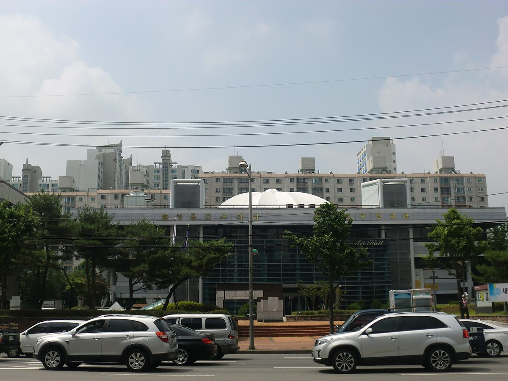
평창 운두령풍력, 600억 원 사업에 주민 30억·군 18억 원 출자…주민 연 4억~5억 원 수익으로 7년 만에 원금 회수 기대
4.2MW 5기 21MW, 태백 가덕산 방식 '주민주도형' 업무협약…군은 2029년 가동부터 연 3억 원 수익, 10년 안에 연 200억 원 기본소득 재원 목표
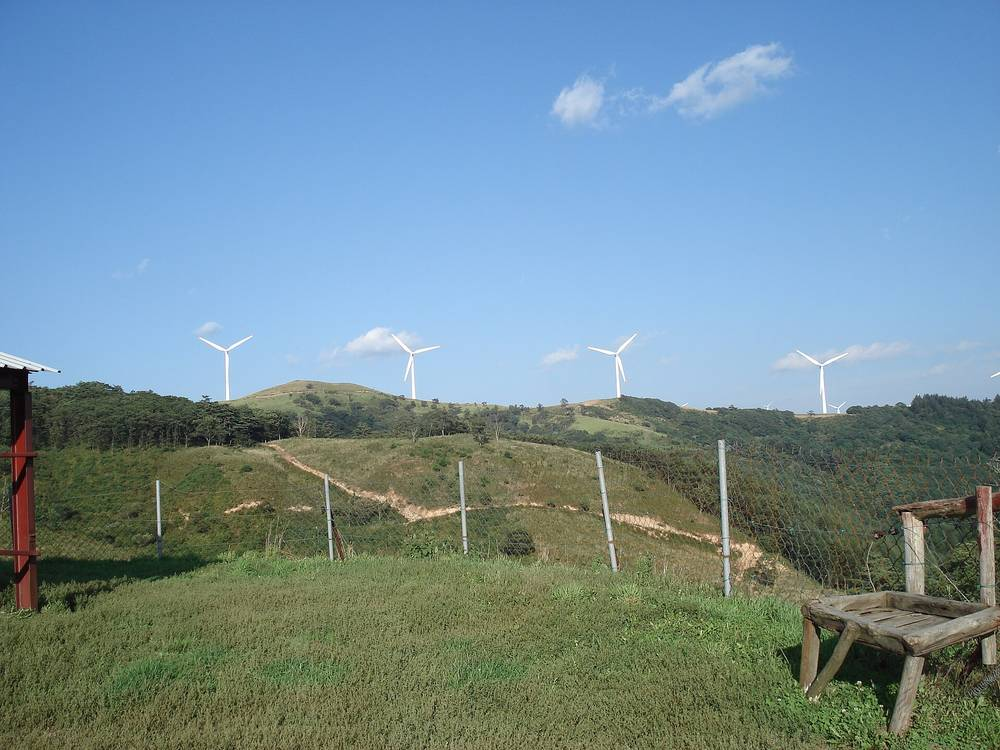
이탈리아 재생에너지공동체·공동 자가소비 7,797곳·636MW로 늘어…10개월 새 4배, 남부는 뒤처져
GSE 10월 31일 자료 분석…풀리아는 476곳·15.7MW·이용자 3,517명, 정부는 1MW 이하 태양광에 12억 유로 투자 보조 예고
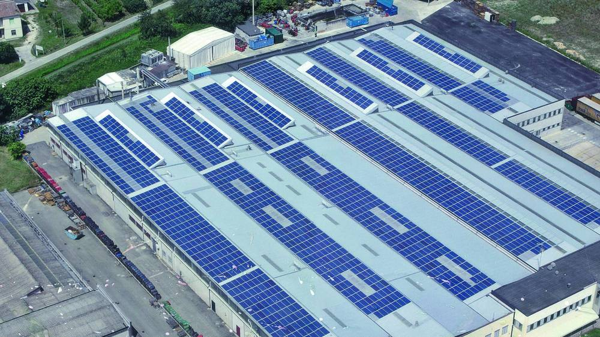

독일 린들라르 시와 마을 단체 29곳, 풍력 시민참여 몫 나누는 협약 서명
건설 중인 포겔베르크 풍력단지…시가 받는 금액의 80%는 반경 2.5km 단체, 20%는 시 전역 단체 몫


경기 서수원·월암 나들목 유휴부지 2만7,000㎡에 햇빛발전소 준공…협동조합 26곳·도민 1만1,000여 명 참여
2023년 경기RE100 비전 선포 뒤 부지 임대, 2025년 2월 착공…설비 용량·사업비·수익 배분 방식은 공개 안 돼

안산에너지절약마을 20년…올해 에너지의 날 아파트 22곳·약 2만5,000세대 함께 불 껐다
행정·시민단체 연대한 안산에너지전환과자립네트워크, 매달 22일 밤 9시부터 10분 소등…'에너지 지킴이' 3기·'에너지 서포터즈'로 가정에서 단지로

솔라리그 장관표창에 인제군·고령군·달구벌시민햇빛발전협동조합…민간부문 입상 4곳 모두 발전협동조합
제8회 대한민국 솔라리그 14곳 수상 확정, 5일 정부세종컨벤션센터서 시상…고령군은 햇빛소득마을 수익을 주민복지기금에, 군포시는 주민·시민발전협동조합과 방음터널 태양광 기획

광주 동구 계림동에 주민 주도 '초록계림에너지전환센터' 문 열어…태양광 모니터링·주민 교육 거점
10월 30일 개소식에 주민실천단 등 50여 명…주민·행정·전문기관 협력체계 만들기로, 설비 규모·예산은 공개 안 돼

춘천 새마을금고·탄소중립지원센터·사회적협동조합, '시민 에너지 커뮤니티' 실험…시민햇빛협동조합 조합원 모집
1차 사업비 500만 원으로 햇빛놀이터·협동조합 교육, 2차엔 아파트 한 곳 베란다 미니태양광 실증 계획…장기적으로 5곳·조합원 1,000명 구상

에너지협동조합 활동가 40명, 고흥 주민참여 수상태양광·나주 한전KDN 찾아 계통 접속·계획입지 속 시민참여 공부
한국에너지정보문화재단·시민발전이종협동조합연합회, 11월 2~3일 전남 여수·고흥·나주 일대서 역량강화 교육…'100GW 계획입지 이행체계와 시민참여' 강의도

인천연구원, 시민 에너지전환 참여 넓히려면 실천보상·생활권 공동실천·시민소유 확대해야
2026년 기획연구 '인천 탄소중립 선도도시 에너지 분야 시민참여 방안' 결과…국내외 사례 4개 유형 분석, 시민인식 조사서 경제적 인센티브·참여 편의성·정보 접근성이 과제로

정부 '주민참여 우수사례' 한림해상풍력, 주민 몫 REC 수익에서 주민 회사채 이자 먼저 뗐다…로펌 3곳 "법 위반" 자문 의견
주민법인 3곳이 산 회사채 300억 원의 연 7% 이자를 가중치 0.3 추가 REC 수익에서 충당, 남은 돈만 '이익공유'로 지급…에너지공단 "절차 진행 중", 기후부 "문제 확인되면 개선", 사업자 "주민과 약정, 당국과 협의 중"

영등포 시민햇빛발전협동조합, 공영주차장·공공건물 옥상에 주민 출자 햇빛발전소 제안…구청장 측 설치 가능 여부 확인하겠다
구는 공간 발굴·사용허가만 맡고 건설비·대부료·철거비는 조합과 주민이 지는 구조…발전수익 일부는 반지하 등 취약계층 주거 개선에 쓰겠다는 구상, 대림3동 공영주차장·신길 환승주차장 거론
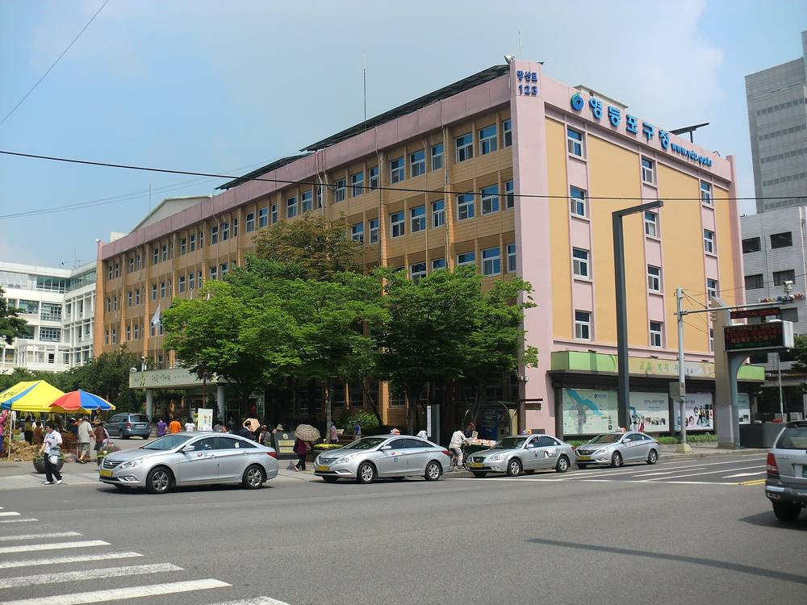
수원서 '햇빛냉장고' 연구세미나…"시민 햇빛발전 수익을 공유냉장고 43곳 먹거리 나눔으로", '햇빛 먹거리 연대기금' 제안
수원지속가능발전협의회 30일 세미나, 전기료·수리비를 공모사업·후원에 기대는 공유냉장고와 시민 출자 발전소 잇는 방안 논의…에너지협동조합·시민햇빛발전 사회적협동조합·수원시 미래에너지팀장 토론, 운영협의체·소규모 시범사업은 후속 과제
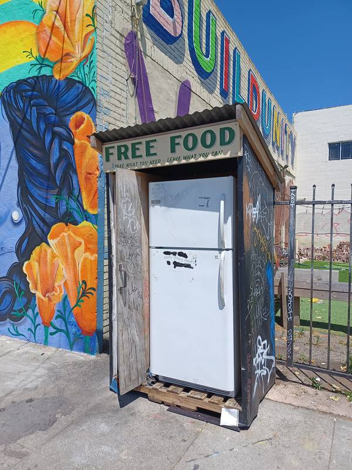
화성 농산물산지유통센터 옥상에 299kW 시민발전소…시가 지붕 내주고 시민이 출자한 'RE빛 제4호' 준공
화성시민재생에너지발전협동조합 "화성 첫 시유지 시민에너지발전소"…시장은 공공시설 옥상·주차장으로 시민참여형 태양광 확대, 조합은 장안면 석포6리 햇빛소득마을 추진
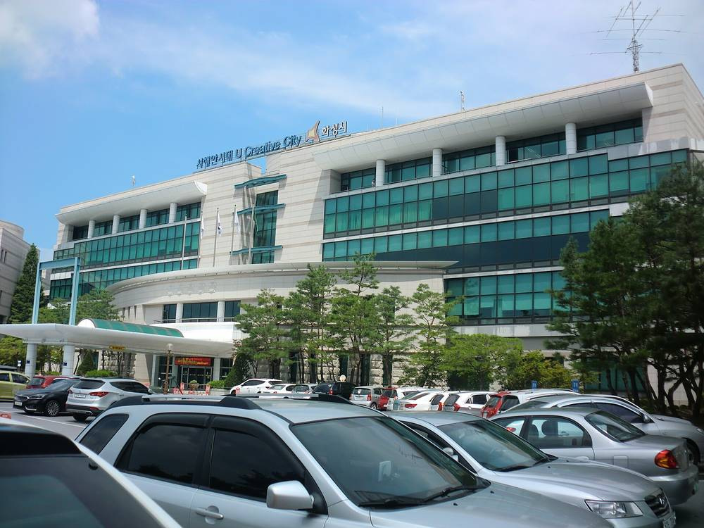
사찰 에너지 자립 설명회서 태양광 '자가소비형'·'부지임대형' 두 모델 나와…초기 비용·행정 절차에 막힌 사찰 겨냥
불교환경연대·비로자나자연에너지협동조합, 29일 서울서 설명회…요사채 지붕은 직접 쓰고 주차장은 사업자에 빌려주는 방식, 현장 진단부터 인허가·시공까지 돕겠다고 밝혀
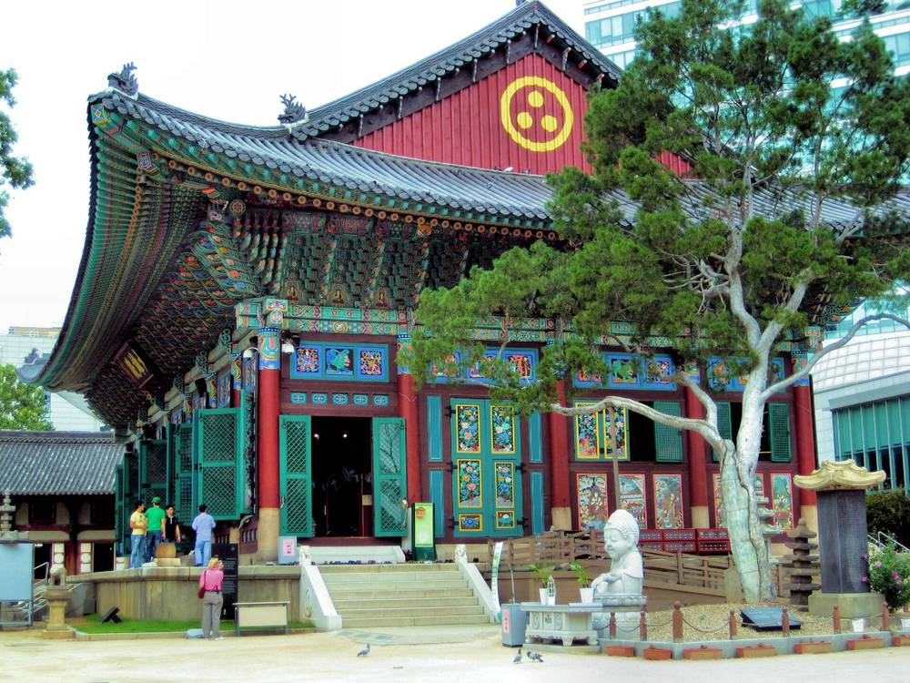
평창 운두령 21MW 풍력 업무협약 체결…600억 원 사업에 주민·군 일부 투자, 주민은 해마다 투자금의 10% 가량 이자
용평면 노동리 운두령 일대 풍력단지, 28일 풍력개발업체·평창군·주민 협약…이자 수익으로 마을 복지 꾸리는 공공주도형 사업 평창서 처음, 주민 투자 총액·참여 주민 수·투자 방식은 아직 안 나와

네덜란드 크림펀안덴에이설, 소방서 지붕에 주민 협동조합 태양광 200여 장…1장 75유로 증서로 주민 참여
시는 지붕을 내주고 에너지협동조합 에네르히크 크림펀이 조합원과 함께 패널 구매, 약 25가구분 전기 생산 예상…목표 수익률 연 3%에 해마다 투자금 일부 돌려받아 협동조합 계산 순수익률 최대 6%
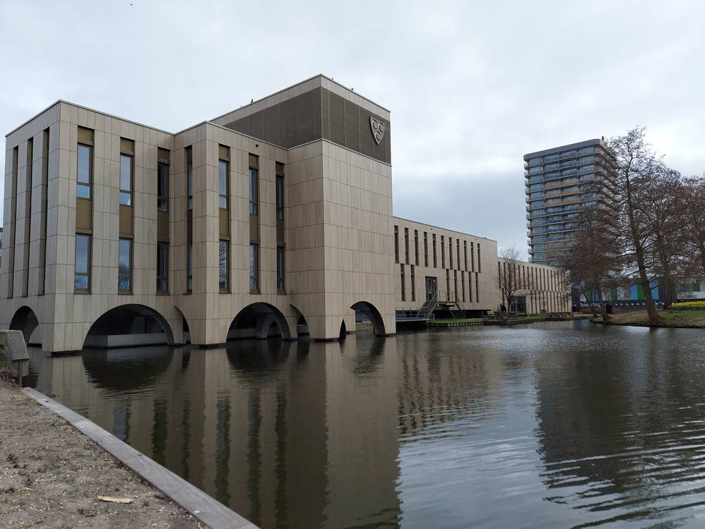
영국 뷰들리 시민단체, 공영주차장 위 '공동체 소유' 태양광 차양 제안…도그 레인 주차장 일부에서 시범 사업
트랜지션 뷰들리의 '뷰들리 에너지', 시범이 성공하면 뷰들리·와이어 포리스트의 다른 주차장으로 넓히는 구상…11월 7일 주민 의견 수렴, 용량·사업비·출자 방식은 밝히지 않아
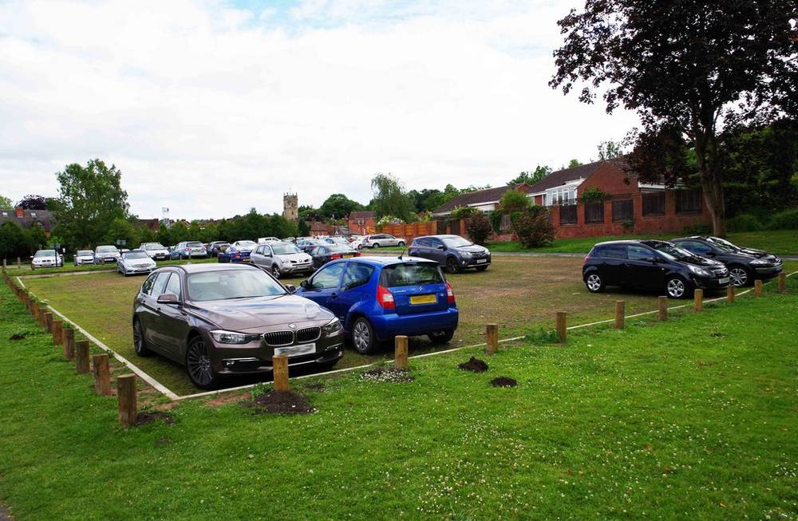
평창군, 21MW 운두령풍력 주민참여형으로 추진…28일 군·발전사·한국남동발전·주민대표 업무협약 예정
태백 가덕산 풍력단지 개발 방식 적용 계획…사업 초기부터 주민대표와 정보 공유, 발전 수익 지역 환원 방안 마련 방침, 주민 지분율·수익 규모는 아직 안 나와
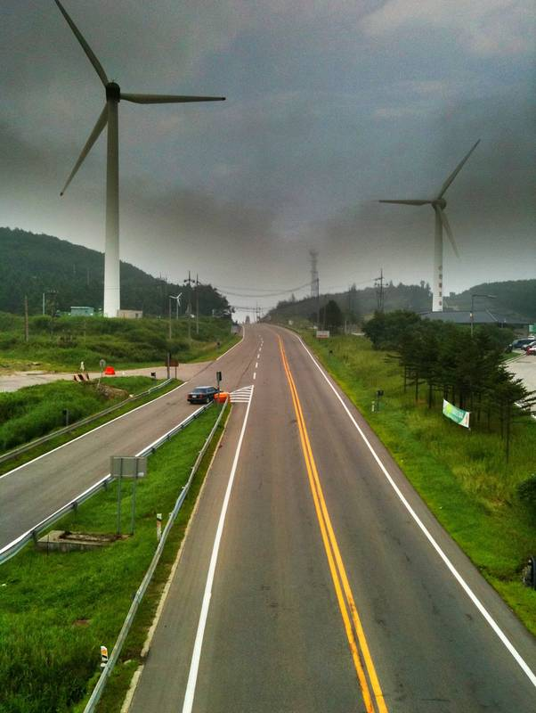
네덜란드 바털란트 풍력협동조합, 풍차 수익 3만 유로 동네 활동에 내놓는다…2027년부터 조합원 온라인 투표로 지원처 결정
모니켄담~마르컨 제방 풍차 2기를 가진 주민 조합, 단체당 최대 1,000유로·2월 28일까지 신청…스포츠·문화·돌봄 세 분야, 외로운 이웃 잇는 모임에 더 관심
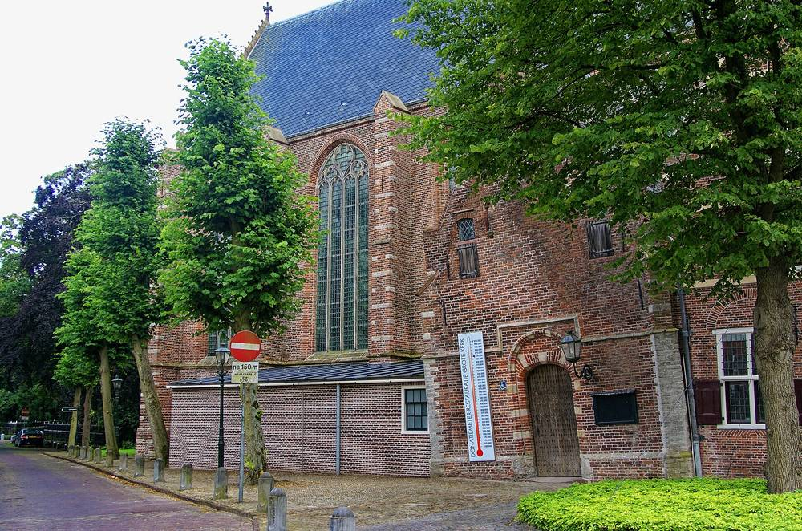
이탈리아 이브레아 125년 에너지협동조합 Aeg, 가스 배관망 이탈가스에 넘기고 매각 대금 전부 카나베세 지역에 재투자하기로
조합원 약 2만 명, 지난 2년 요금 환급으로 100만 유로 돌려줘…광역 입찰 제도로 배관망 운영 접고 재생에너지·사회 사업 담은 산업계획 마련 중, 매각 금액은 비공개
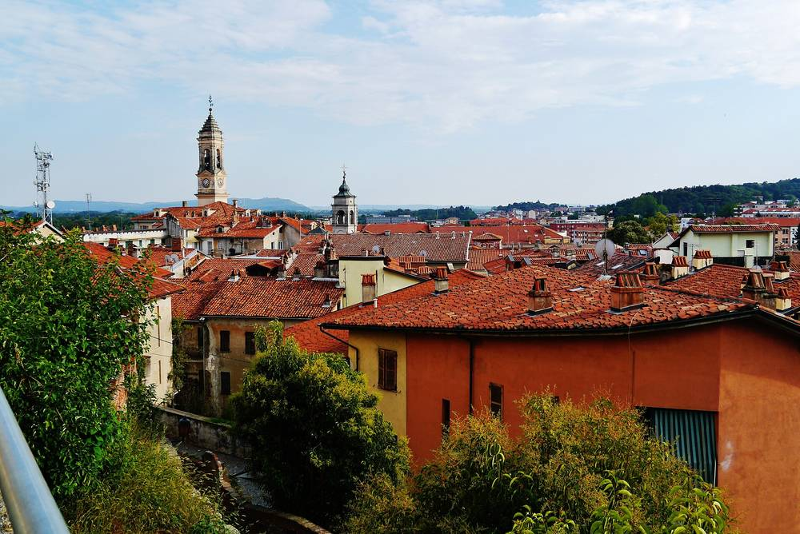
천주교 교구 에너지 전환 제각각…대전교구 신자 출자 햇빛협동조합, 조합원 2,982명·성당 발전소 42기 3,250kW
15개 교구 질의 결과 수원교구 자가발전은 목표 22MW의 약 12%, 대전교구는 탄소중립 본당 인증제 운영…교구별 실적을 같은 기준으로 모으는 한국교회 공통 집계 체계는 확인 안 돼
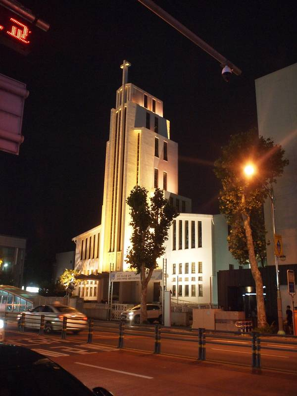
반도체 도시 용인, 재생에너지 발전 2022년 소비량의 0.8%…1호 시민참여 햇빛발전소는 18억 원 중 9억1,000만 원 협동조합 출자
경기 31개 시·군 중 온실가스 배출 4위·신재생 발전량 27위, 1차 에너지계획 이행률 27.6%…공공시설 4곳 1,000kW급 주민참여형 태양광 설치 중, 조합원 200여 명 시민 햇빛협동조합도 창립
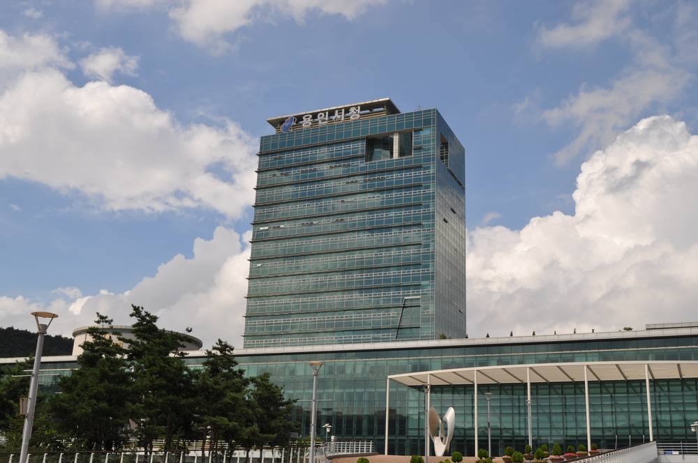
이탈리아 시칠리아 내륙 4개 마을 재생에너지공동체 '시칠리아 솔리달레', 1년 반 만에 조합원 75명·태양광 약 1MW
무소멜리 등 4곳 묶어 가동 약 500kW에 계통 연결 대기 약 500kW…농지 대신 기존 지붕에 작은 설비 우선, 2027년 2MW 넘기기 목표
스페인 카탈루냐 오소나 에너지공동체 20여 곳, 마을 4곳 도는 '에너지 투어'로 경험 나눠…카탈루냐 118곳 중 28곳이 오소나에
군 지역에너지청·협동조합 OECOOP 주최로 비크·산페레데토레요·토레요·발레냐 공동체 방문…오소나·류사네스엔 협동조합형 29곳, 주민 96%가 자기 마을 공동체에 참여 가능
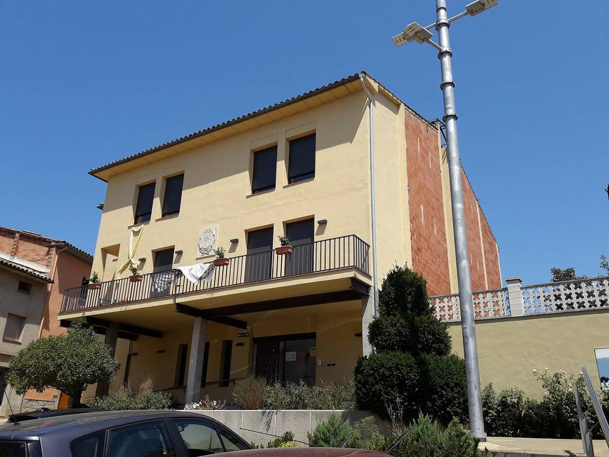
수원도시공사의 시민햇빛발전 특수목적법인 출자 동의안, 시의회 상임위 통과…28일 본회의 의결 예정
환경안전위 22일 원안가결, 출자 금액·지분율은 공개 안 돼…수원시는 4월 협약 때 공영주차장·공공 유휴부지 20MW 이상 태양광과 시민 투자자 우선 배당 방식 제시
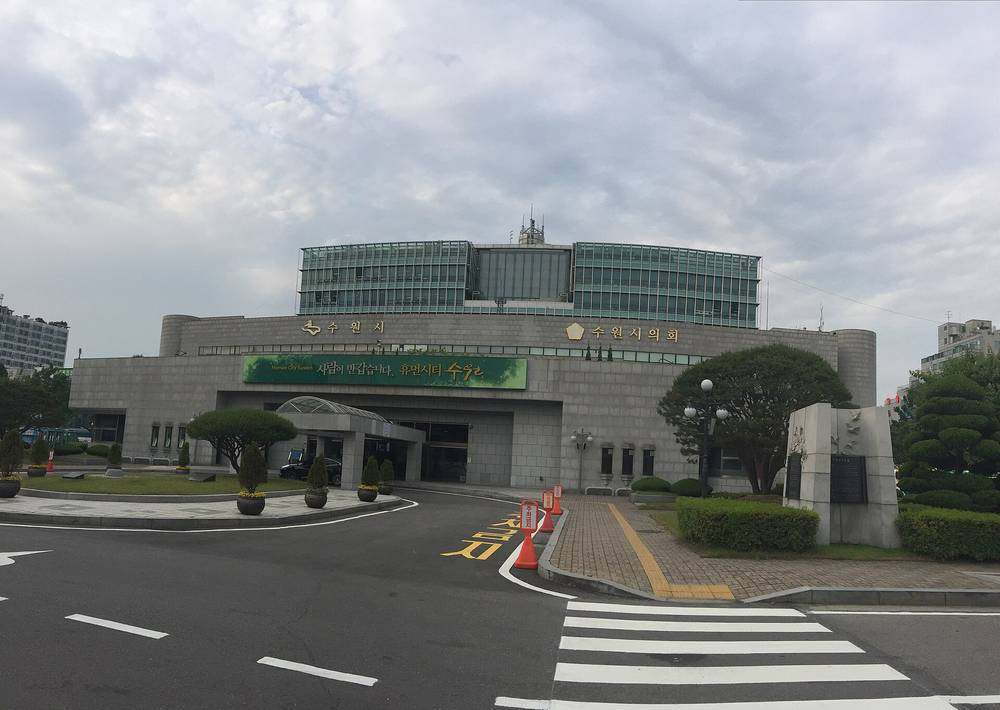
영국 셰틀랜드 노스마빈 마을계획 초안, 공동체 이익 없는 대형 에너지 개발은 제한…작은 공동체 소유 사업은 지지
노스마빈 공동체개발회사가 주민과 만든 10년 계획…두 번째 해저 송전선 상륙 후보지 에샤네스에 우려, 11월 19일까지 의견 받아
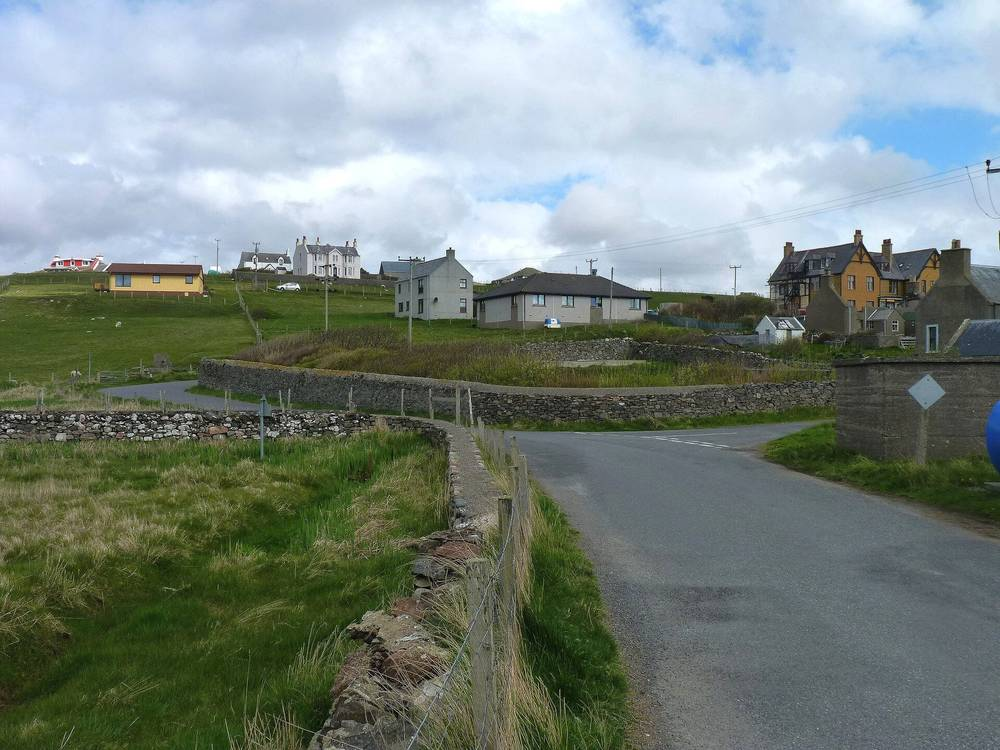
독일 크레펠트 에너지협동조합, 더 많은 시민 참여 위해 출자 1좌 가격 절반으로 내린다
2018년 설립, 조합원 120명 출자로 지붕 태양광 5곳 운영…옛 벨벳 공장 14kWp에서 노인요양시설 80kWp까지
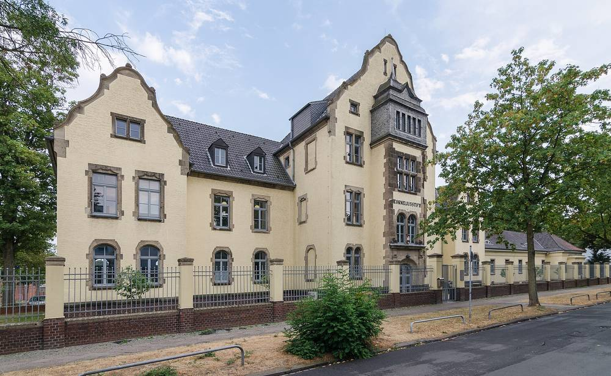
독일 부르글렝겐펠트 시 공기업·시민에너지협동조합, 1MW 태양광단지 착공…조합 70%·시 공기업 15%·땅 주인 15%
시 공기업이 지상 태양광 사업회사에 지분을 넣는 것은 처음…1단계 투자 약 55만 유로, 계획 중인 지자체 풍력단지도 함께하기로
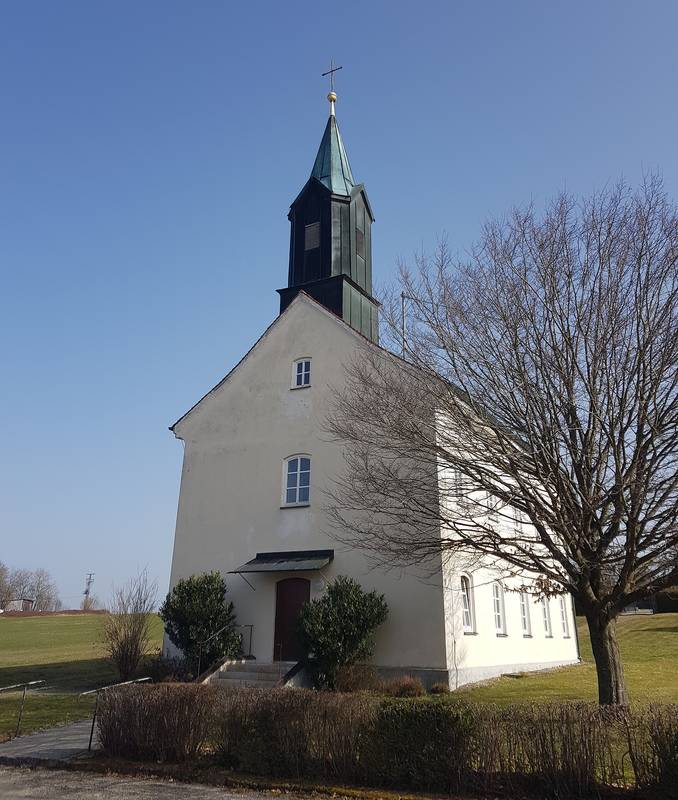
벨기에 탕플루 시민풍력협동조합 에올-리앵, 14년 만에 두 번째 풍력발전기…시민 판매 협동조합 거쳐 주민에게 공급
2012년 조합원 10명이 7주 만에 50만 유로 모아 첫 발전기…두 대로 마을 사용량의 두 배 녹색 전기, 날개는 부엉이 깃 본뜬 소음 저감형
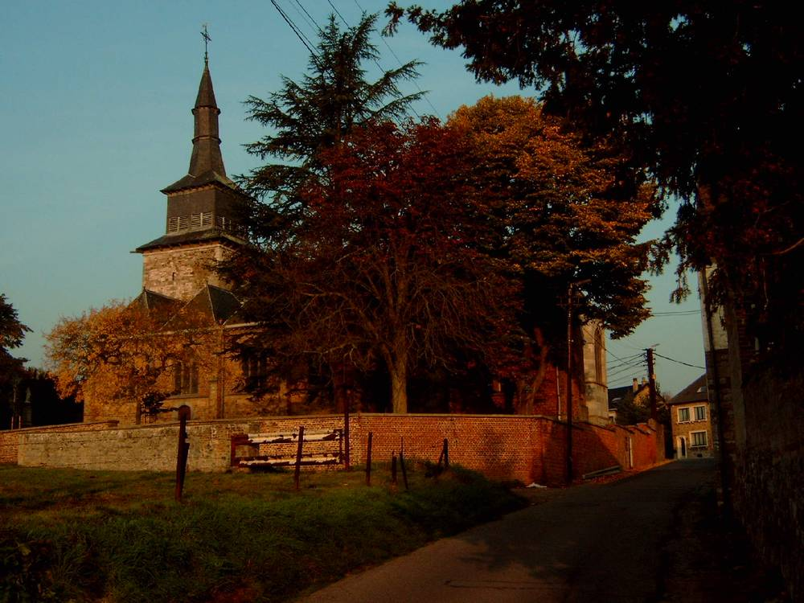
파주해시민발전협동조합, 공장 지붕에 81.92kW 5호기 준공하고 창립 5주년
시민 출자로 광탄면 K-두부연구소 지붕에 설치…신문협동조합 파주에서·평화로가게와 3자 업무협약
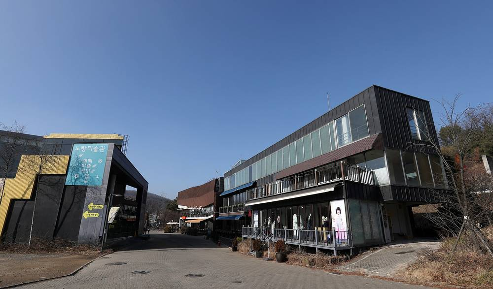
일본 이이다시 시민 회사가 세운 태양광 431곳…공공 지붕 무상 대여·지역환경권 조례로 20여 년 키웠다
2004년 설립 오히사마에너지, 가정은 설치비 0원에 9년 정액 뒤 소유권 넘겨받아…주택 약 2,300가구에 지붕 태양광
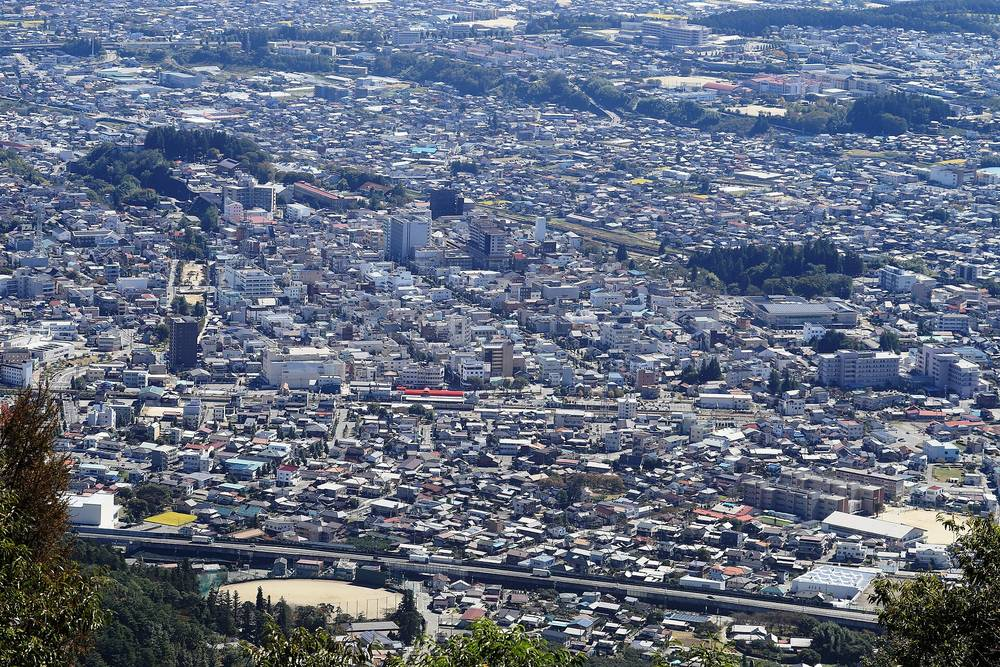
주민참여형 영농형 태양광, 이익은 주민 몫일까…팩트체크 결과 '절반의 사실'
안산 시민햇빛발전협동조합·영암 에너지자립마을은 수익 환원…소유 구조·투자 비율·수익 배분 조건이 성패 가른다
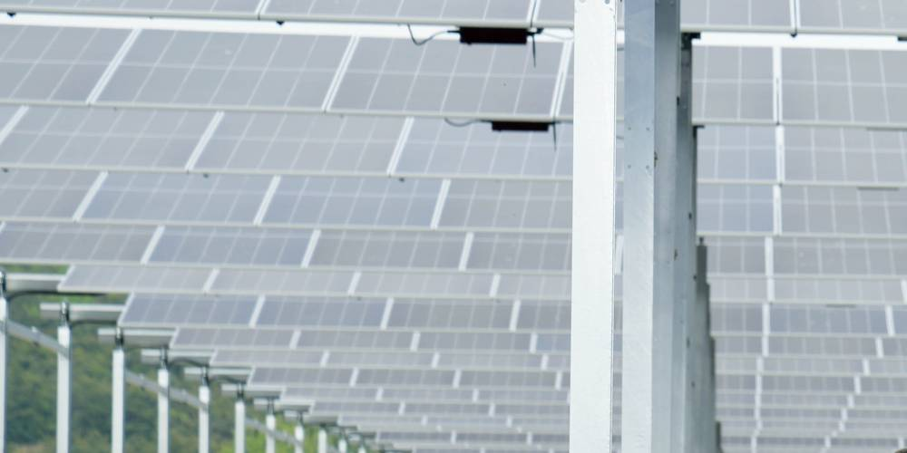
도서관 지붕 30kW로 시작한 안산시민햇빛발전협동조합, 13년 만에 조합원 2,400명·출자금 130억 원
공공건물 지붕·주차장 빌려 발전소 60곳 준공…신협 상생협력대출로 담보 없이 건설자금 마련, 수백 건 거래에 연체 0건
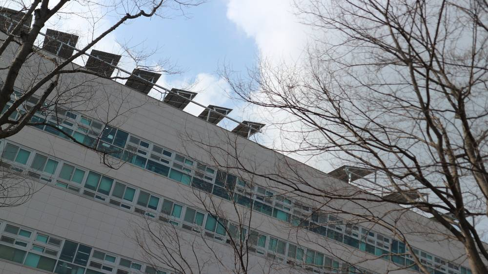
시민발전협동조합들, RPS 개편안 폐기 요구…신규 태양광 공기업·대형 발전사 몰아주기 비판
2030년 태양광 목표 87GW 중 38.2GW는 9개 발전공기업, 12.8GW+α는 500MW 이상 민간 발전사·공공기관에…시민참여·분산에너지 원칙 보장 촉구


市民エネルギー
ソウル永登浦の市民太陽光協同組合、16日に区議会で「住民参加型再エネ支援条例」専門家フォーラム…新吉乗換・大林3洞の公営駐車場の候補地検討結果を公開
安山市民太陽光発電協同組合が永登浦の公営駐車場・遊休空間の立地分析を発表、ソウル・京畿の市民発電協同組合と区議会議員が討論…同じ会場で環境配慮商品の体験展も
平昌・雲頭嶺風力、600億ウォンの事業に住民30億・郡18億ウォンを出資…住民は年4億～5億ウォンの収益で7年で元本回収見込み
4.2MW×5基の21MW、太白・加徳山方式の「住民主導型」業務協約…郡は2029年の稼働から年3億ウォンの収益、10年以内に年200億ウォンのベーシックインカム財源を目標
イタリアの再エネ共同体・共同自家消費が7,797件・636MWに…10か月で4倍、南部は遅れ
GSEの10月31日データを分析…プーリアは476件・15.7MW・利用者3,517人、政府は1MW以下の太陽光に12億ユーロの投資補助を予定
華城市民出資の「RE光 第4号市民エネルギー発電所」が竣工…農産物産地流通センター屋上に299kW
華城市民再生エネルギー発電協同組合が主管、市長・道議会議員・組合員ら約120人が出席
京畿道・西水原・月岩インターチェンジの遊休地2万7,000㎡に太陽光発電所が竣工…協同組合26団体・道民1万1,000人余りが参加
2023年の京畿RE100ビジョン宣言後に用地を賃借、2025年2月着工…設備容量・事業費・収益配分の方法は公表されず
安山エネルギー節約村20年…今年の「エネルギーの日」にマンション22カ所・約2万5,000世帯が一斉消灯
行政と市民団体が連携する安山エネルギー転換と自立ネットワーク、毎月22日夜9時から10分間の消灯…「エネルギー守り人」3期と「エネルギーサポーターズ」で家庭から団地へ
「ソーラーリーグ」長官表彰に麟蹄郡・高霊郡・タルグボル市民太陽光発電協同組合…民間部門の入賞4団体はすべて発電協同組合
第8回大韓民国ソーラーリーグ14団体の受賞が確定、5日に政府世宗コンベンションセンターで授賞式…高霊郡は太陽光所得村の収益を住民福祉基金に、軍浦市は住民・市民発電協同組合と防音トンネル太陽光を企画
光州・東区鶏林洞に住民主導の「チョロク鶏林エネルギー転換センター」開所…太陽光モニタリングと住民教育の拠点
10月30日の開所式に住民実践団など50人余り…住民・行政・専門機関の協力体制づくりへ、設備規模・予算は非公表
春川のセマウル金庫・炭素中立支援センター・社会的協同組合が「市民エネルギーコミュニティ」の実験…市民ひかり協同組合の組合員を募集
第1次事業費500万ウォンで「ひかりの遊び場」・協同組合教育、第2次ではマンション1カ所でベランダ用ミニ太陽光の実証を計画…長期的に5カ所・組合員1,000人を構想
エネルギー協同組合の活動家40人、高興の住民参加型水上太陽光と羅州の韓電KDNを訪ね、系統接続と計画立地の中の市民参加を学ぶ
韓国エネルギー情報文化財団と市民発電異種協同組合連合会、11月2〜3日に全羅南道麗水・高興・羅州一帯で研修…「100GW計画立地の履行体制と市民参加」の講義も
仁川研究院、市民のエネルギー転換参加を広げるには実践への報酬・生活圏での共同実践・市民所有の拡大を
2026年企画研究「仁川カーボンニュートラル先導都市 エネルギー分野の市民参加方策」の結果…国内外の事例を4類型で分析、市民意識調査では経済的インセンティブ・参加のしやすさ・情報アクセスが課題に
政府の「住民参加優良事例」翰林洋上風力、住民分のREC収益から住民社債の利息を先に差し引く…法律事務所3社が「法違反」との諮問意見
住民法人3社が購入した社債300億ウォンの年7%の利息を、加重値0.3の追加REC収益で賄い、残りだけを「利益共有」として支給…エネルギー公団「手続き中」、気候部「問題が確認されれば改善」、事業者「住民と約定、当局と協議中」
ソウル永登浦の市民太陽光発電協同組合、公営駐車場・公共建物の屋上に住民出資の太陽光発電所を提案…区庁長側は設置の可否を確認へ
区は空間の発掘と使用許可のみ、建設費・貸付料・撤去費は組合と住民が負担する仕組み…発電収益の一部は半地下住宅など脆弱層の住まい改善に充てる構想、大林3洞公営駐車場・新吉乗り換え駐車場が候補に
水原で「ひだまり冷蔵庫」研究セミナー…「市民太陽光の収益をコミュニティ冷蔵庫43カ所の食の分かち合いに」、「ひだまり食料連帯基金」を提案
水原持続可能発展協議会が30日にセミナー、電気代・修理費を公募事業や寄付に頼るコミュニティ冷蔵庫と市民出資の発電所をつなぐ案を議論…エネルギー協同組合・市民太陽光社会的協同組合・水原市未来エネルギーチーム長が討論、運営協議体・小規模モデル事業は今後の課題
華城市の農産物産地流通センター屋上に299kWの市民発電所…市が屋根を提供し市民が出資した「REビッ第4号」が竣工
華城市民再生エネルギー発電協同組合「華城初の市有地市民エネルギー発電所」…市長は公共施設の屋上・駐車場で市民参加型太陽光を拡大、組合は長安面石浦6里の「ひなた所得村」を推進
寺院のエネルギー自立説明会で太陽光「自家消費型」「敷地賃貸型」の2モデル…初期費用・行政手続きで足踏みする寺院が対象
仏教環境連帯・毘盧遮那自然エネルギー協同組合、29日ソウルで説明会…僧坊の屋根では直接使い、駐車場は事業者に貸す方式、現地診断から許認可・施工まで支援する方針
平昌・雲頭嶺21MW風力の業務協定を締結…600億ウォンの事業に住民と郡が一部出資、住民は毎年投資額の10%程度を利子として受け取る
龍坪面老洞里の雲頭嶺一帯の風力団地、28日に風力開発業者・平昌郡・住民が協定…利子収入で集落の福祉を担う公共主導型事業は平昌で初めて、住民の投資総額・参加住民数・投資方式はまだ明らかでない
オランダ・クリンペン・アーン・デン・アイセル、消防署の屋根に住民協同組合の太陽光パネル200枚余り…1口75ユーロの証書で住民が参加
市が屋根を提供しエネルギー協同組合エネルギーク・クリンペンが組合員と共にパネルを購入、約25世帯分の発電見込み…目標利回り年3%に毎年出資金の一部を返還、協同組合の試算で実質利回り最大6%
英ビュードリーの市民団体、公営駐車場の上に「コミュニティ所有」の太陽光カーポートを提案…ドッグ・レーン駐車場の一部で試験事業
トランジション・ビュードリーの「ビュードリー・エナジー」、試験が成功すればビュードリー・ワイア・フォレストの他の駐車場へ広げる構想…11月7日に住民の意見聴取、容量・事業費・出資方式は明らかにせず
平昌郡、21MWの雲頭嶺風力を住民参加型で推進…28日に郡・発電事業者・韓国南東発電・住民代表が業務協約を結ぶ予定
太白・加徳山風力団地の開発方式を適用する計画…事業初期から住民代表と情報を共有し、発電収益を地域に還元する方策を用意する方針、住民の持分比率・収益規模はまだ示されず
オランダ・ワーテルラントの風力協同組合、風車収益3万ユーロを地域活動に…2027年からは組合員のオンライン投票で支援先を決定
モニッケンダム～マルケン間の堤防に風車2基を持つ住民組合、1団体最大1,000ユーロ・2月28日まで申請受付…スポーツ・文化・ケアの3分野、孤立した住民をつなぐ活動に期待
イタリア・イヴレーアの125年続くエネルギー協同組合Aeg、ガス配管網をイタルガスに譲渡し売却代金をすべてカナヴェーゼ地域に再投資へ
組合員約2万人、過去2年に料金還元で100万ユーロを返還…広域入札制度で配管網の運営から撤退、再生可能エネルギー・社会事業を盛り込んだ事業計画を策定中、売却額は非公表
韓国カトリック教区のエネルギー転換はまちまち…大田教区の信者出資の太陽光協同組合、組合員2,982人・聖堂発電所42基3,250kW
15教区への質問で、水原教区の自家発電は目標22MWの約12%、大田教区は小教区の炭素中立認証制を運営…教区ごとの実績を同じ基準で集める韓国教会共通の集計体制は確認されず
半導体都市・龍仁、再エネ発電は2022年消費量の0.8%…市民参加の太陽光1号発電所は18億ウォンのうち9億1,000万ウォンを協同組合が出資
京畿道31市・郡で温室効果ガス排出4位・新再生エネ発電量27位、第1次エネルギー計画の履行率27.6%…公共施設4カ所で1,000kW級の住民参加型太陽光を設置中、組合員200人余りの市民太陽光協同組合も発足
イタリア・シチリア内陸4町の再生可能エネルギー共同体「シチリア・ソリダーレ」、設立1年半で組合員75人・太陽光約1MW
ムッソメーリなど4町をまとめ稼働中約500kW、系統接続待ち約500kW…農地ではなく既存の屋根に小規模設備を優先、2027年に2MW超えを目指す
スペイン・カタルーニャのオソナでエネルギーコミュニティ約20団体、4つの町を巡る「エネルギーツアー」で経験を共有…カタルーニャ118団体のうち28団体がオソナに
郡の地域エネルギー庁と協同組合OECOOPが主催、ビク・サン・ペラ・ダ・トゥレリョ・トゥレリョ・バラニャのコミュニティを訪問…オソナとリュサネスには協同組合型が29団体、住民の96%が自分の町のコミュニティに参加可能
水原都市公社の市民太陽光発電特別目的法人への出資同意案、市議会常任委を通過…28日の本会議で議決予定
環境安全委が22日に原案可決、出資額・持分比率は公表されず…水原市は4月の協約で公営駐車場・公共遊休地での20MW以上の太陽光と市民投資家への優先配当方式を提示
英シェトランド・ノースメイヴィンの地域計画案、地域の利益がない大規模エネルギー開発は制限…小規模なコミュニティ所有事業は支持
ノースメイヴィン・コミュニティ開発会社が住民と作った10年計画…2本目の海底送電線の陸揚げ候補地エシャネスに懸念、11月19日まで意見募集
ドイツ・クレーフェルトのエネルギー協同組合、より多くの市民が参加できるよう出資1口の価格を半額に
2018年設立、組合員120人の出資で屋根置き太陽光5カ所を運営…旧ビロード工場の14kWpから高齢者施設の80kWpまで
ドイツ・ブルクレンゲンフェルト市の公営企業と市民エネルギー協同組合、1MWの太陽光発電所を着工…組合70%・市公営企業15%・地権者15%
市公営企業が野立て太陽光の事業会社に出資するのは初めて…第1期投資は約55万ユーロ、計画中の自治体風力発電所でも連携へ
ベルギー・タンプルーの市民風力協同組合エオル・リアン、14年ぶりに2基目の風車…市民の電力小売協同組合を通じて住民に供給
2012年に組合員10人が7週間で50万ユーロを集めて1基目を購入…2基で村の使用量の2倍のグリーン電力、羽根はフクロウの羽を模した低騒音型
長野県飯田市の市民会社が建てた太陽光431カ所…公共屋根の無償貸与と地域環境権条例で20年余り育てる
2004年設立のおひさまエネルギー、家庭は設置費0円で9年間の定額払いの後に所有権を取得…住宅約2,300世帯に屋根太陽光
住民参加型の営農型太陽光、利益は住民のものになるのか…ファクトチェックの結果は「半分は事実」
安山市民太陽光発電協同組合や霊岩のエネルギー自立村は収益を還元…所有構造・出資比率・収益配分の条件が成否を分ける
図書館の屋根30kWから始まった安山市民太陽光発電協同組合、13年で組合員2,400人・出資金130億ウォンに
公共施設の屋根・駐車場を借りて発電所60カ所を竣工…信協の相生協力融資で担保なしに建設資金を調達、数百件の取引で延滞ゼロ
市民発電協同組合、RPS改編案の廃棄を要求…新規太陽光の公企業・大手発電事業者への集中を批判
2030年の太陽光目標87GWのうち38.2GWを9つの発電公企業に、12.8GW+αを500MW以上の民間発電事業者・公共機関に配分…市民参加・分散型エネルギーの原則の保障を求める
市民能源
首尔永登浦市民光伏合作社16日在区议会举办"居民参与型可再生能源支援条例"专家论坛…公布新吉换乘、大林3洞公营停车场选址评估结果
安山市民光伏发电合作社发布永登浦公营停车场与闲置空间选址分析，首尔、京畿市民发电合作社与区议员参与讨论…现场同时举办环保产品体验展
平昌云头岭风电600亿韩元项目，居民出资30亿、郡出资18亿韩元…居民预计年获4亿至5亿韩元收益，约7年收回本金
4.2MW风机5台共21MW，沿用太白加德山模式签署"居民主导型"业务协议…郡政府预计2029年投运起年收益3亿韩元，目标10年内每年筹集200亿韩元基本收入财源
意大利可再生能源社区与集体自用配置增至7,797个、636MW…10个月增长4倍，南部落后
分析GSE截至10月31日数据…普利亚476个、15.7MW、用户3,517人，政府拟对1MW以下光伏提供12亿欧元投资补贴
京畿道西水原·月岩立交闲置用地2.7万平方米太阳能电站竣工…26家合作社和1.1万余名道民参与
2023年宣布京畿RE100愿景后租用用地，2025年2月开工…装机容量、项目费用和收益分配方式未公开
安山节能村20年…今年"能源日"22个公寓小区约2.5万户同时熄灯
行政与市民团体联手的安山能源转型与自立网络，每月22日晚9点起熄灯10分钟…"能源守护者"第3期与"能源支持团"把节能从家庭带到小区
“太阳能联赛”部长表彰授予麟蹄郡、高灵郡和达句伐市民阳光发电合作社…民间部门4家获奖单位全是发电合作社
第八届大韩民国太阳能联赛确定14家获奖单位，5日在政府世宗会展中心颁奖…高灵郡把阳光收入村收益存入居民福利基金，军浦市与居民、市民发电合作社共同策划隔音隧道光伏
春川新村金库、碳中和支援中心与社会合作社开展“市民能源社区”实验…招募市民阳光合作社社员
第一期投入500万韩元开设“阳光游乐场”和合作社课程，第二期计划在一处公寓试点阳台迷你光伏…长期设想扩至5处、社员1,000人
40名能源合作社骨干走访高兴居民参与型水上光伏和罗州韩电KDN，学习并网与规划选址中的市民参与
韩国能源信息文化财团与市民发电异种合作社联合会11月2日至3日在全罗南道丽水、高兴、罗州一带举办能力建设培训…还开设"100GW规划选址实施体系与市民参与"讲座
仁川研究院：扩大市民参与能源转型，需增加实践奖励、生活圈共同实践和市民所有
2026年策划研究《仁川碳中和先导城市能源领域市民参与方案》结果…将国内外案例分为4类，市民认知调查显示经济激励、参与便利性和信息获取为主要课题
政府"居民参与优秀案例"翰林海上风电从居民应得REC收益中先扣居民所购公司债利息…三家律师事务所咨询意见认为"违法"
三家居民法人认购的300亿韩元公司债年息7%由加权0.3的追加REC收益支付，余额才以"收益共享"名义发放…能源公团称"程序进行中"，气候部称"发现问题将改进"，企业称"与居民有约定，正与主管部门协商"
首尔永登浦市民光伏发电合作社提议在公营停车场和公共建筑屋顶建居民出资光伏电站…区厅长方面表示将确认能否安装
区政府只负责寻找空间和发放使用许可，建设费、租用费和拆除费由合作社与居民承担…设想将部分发电收益用于改善半地下住房等弱势群体居住条件，大林3洞公营停车场和新吉换乘停车场被提及
水原举行"阳光冰箱"研究研讨会："把市民光伏收益用于43处共享冰箱的食物分享"，提议设立"阳光食物团结基金"
水原可持续发展协议会30日召开研讨会，讨论把依赖公开征集项目和捐助支付电费、维修费的共享冰箱与市民出资电站连接起来…能源合作社、市民阳光发电社会合作社和水原市未来能源组组长参加讨论，运营协议体和小规模试点列为后续课题
华城农产品产地流通中心屋顶建成299kW市民发电站…市政府提供屋顶、市民出资的"RE光第4号"竣工
华城市民再生能源发电合作社称"华城首座市有地市民能源发电站"…市长表示将在公共设施屋顶和停车场扩大市民参与型光伏，合作社推进长安面石浦6里"阳光收入村"
寺院能源自立说明会提出光伏"自发自用型"和"场地出租型"两种模式…面向受困于初期成本和行政手续的寺院
佛教环境连带与毗卢遮那自然能源合作社29日在首尔举办说明会…僧舍屋顶自发自用、停车场租给发电企业，并表示将从现场诊断到审批、施工全程协助
韩国平昌云头岭21MW风电项目签署业务协议…600亿韩元项目由居民和郡政府出资一部分，居民每年可获约10%投资额的利息
龙坪面老洞里云头岭一带风电场，28日风电开发商、平昌郡与居民签约…以利息收入开展村庄福利的公共主导型项目在平昌尚属首次，居民投资总额、参与人数和投资方式尚未公布
荷兰克林彭阿德艾瑟尔消防站屋顶将装200多块居民合作社光伏板…每份75欧元凭证让居民参与
市政府提供屋顶，能源合作社"活力克林彭"与社员共同购买光伏板，预计发电量约够25户使用…目标年收益率3%，每年另返还部分投资款，按合作社测算净收益率最高6%
英国比尤德利市民团体提议在公共停车场上方建"社区所有"光伏车棚…先在道格巷停车场部分区域试点
转型比尤德利的"比尤德利能源"项目设想试点成功后推广到比尤德利和怀尔森林的其他停车场…11月7日听取居民意见，装机容量、投资额和出资方式尚未公布
平昌郡以居民参与型推进21MW云头岭风电…28日郡政府、开发企业、韩国南东发电与居民代表拟签业务协议
计划沿用太白加德山风电场开发模式…从项目初期起与居民代表共享信息，拟制定发电收益回馈地方方案，居民持股比例和收益规模尚未公布
荷兰瓦特兰风能合作社拿出风机收益3万欧元支持社区活动…2027年起由社员在线投票决定资助对象
在蒙尼克丹至马尔肯堤坝上拥有2台风机的居民合作社，每个团体最多1,000欧元、2月28日前申请…体育、文化、关怀三个领域，更希望支持联结孤独邻居的活动
意大利伊夫雷亚125年能源合作社Aeg将燃气管网移交意大利燃气公司，出售所得将全部再投资于卡纳韦塞地区
社员约2万人，过去2年通过电费返还退还100万欧元…因区域招标制度退出管网运营，正在制定涵盖可再生能源和社会项目的产业计划，出售金额未公开
韩国天主教各教区能源转型进度不一…大田教区信徒出资的阳光发电合作社社员2,982人、教堂发电站42座3,250kW
对15个教区的问询显示，水原教区自用发电仅达22MW目标的约12%，大田教区实行堂区碳中和认证制…尚未发现以统一标准汇总各教区数据的韩国教会共同统计体系
半导体城市龙仁可再生能源发电仅占2022年用电量的0.8%…首座市民参与光伏电站18亿韩元中9.1亿由合作社出资
在京畿道31个市郡中温室气体排放居第4、新再生能源发电量居第27，第1次能源计划执行率27.6%…4处公共设施正在建设1,000kW级居民参与型光伏，约200名社员的市民光伏合作社也已成立
意大利西西里内陆4镇可再生能源社区"西西里团结"，成立一年半吸纳成员75人、光伏约1MW
联合穆索梅利等4镇，已运行约500kW、另约500kW待并网…不占农地、优先在现有屋顶装小型设备，目标2027年突破2MW
西班牙加泰罗尼亚奥索纳约20个能源社区走访4个市镇举办"能源之旅"交流经验…加泰罗尼亚118个社区中有28个在奥索纳
由县地方能源局和合作社OECOOP主办，参访比克、圣佩雷德托雷略、托雷略、巴莱尼亚的社区…奥索纳和柳萨内斯有29个合作社型社区，96%的居民可在本市镇参与社区
水原都市公社向市民阳光发电特殊目的法人出资的同意案通过市议会常任委员会…预计28日全体会议表决
环境安全委员会22日原案通过，出资金额与持股比例未公开…水原市在4月协议中提出在公营停车场和公共闲置用地建设20MW以上太阳能及向市民投资者优先分红的方式
英国设得兰诺斯马文地方规划草案：无社区利益的大型能源开发应受限制，支持小型社区所有项目
诺斯马文社区发展公司与居民共同制定十年规划…第二条海底输电线登陆候选地埃沙内斯引发担忧，意见征集至11月19日
德国布尔格伦根费尔德市公营企业与市民能源合作社开工建设1MW光伏电站…合作社70%、市公营企业15%、土地所有者15%
市公营企业首次入股地面光伏项目公司…一期投资约55万欧元，双方还将合作推进规划中的市属风电场
比利时坦普卢市民风电合作社Eole-Lien时隔14年迎来第二台风机…经市民售电合作社供应给居民
2012年10名社员7周筹得50万欧元买下第一台风机…两台风机可提供相当于全村用电量两倍的绿电，叶片仿猫头鹰羽毛降噪
日本饭田市市民公司建成431座太阳能电站，靠公共屋顶无偿出借和地区环境权条例培育20余年
2004年成立的Ohisama能源公司，家庭零安装费、付9年定额后取得所有权；约2,300户住宅装上屋顶太阳能
从图书馆屋顶30kW起步，韩国安山市民阳光发电合作社13年发展到社员2,400人、出资130亿韩元
租用公共建筑屋顶和停车场建成60座电站，通过信协共生合作贷款无抵押筹集建设资金，数百笔交易零逾期
韩国市民发电合作社要求废除RPS改革方案，批评新增太阳能集中分配给国企和大型发电商
2030年太阳能目标87GW中38.2GW分给9家发电国企，12.8GW+α分给500MW以上民营发电商和公共机构，要求保障市民参与和分布式能源原则
Citizen Energy
Seoul's Yeongdeungpo Citizen Solar Cooperative to Hold Expert Forum on Resident-Participation Renewable Energy Ordinance at District Council on 16th, Unveiling Review of Public Parking Lot Sites
Ansan citizen solar cooperative to present site analysis of Yeongdeungpo's public parking lots and idle spaces, with Seoul and Gyeonggi citizen power cooperatives and a district councilor joining the debate; an eco-products fair runs alongside
Pyeongchang's Undu-ryeong Wind Project: Residents Invest 3 Billion Won and County 1.8 Billion Won in 60 Billion Won Venture, Villagers Expect to Recoup Stake in About Seven Years
Five 4.2MW turbines totalling 21MW under a "resident-led" agreement modelled on Taebaek's Gadeoksan; county expects 300 million won a year from 2029 and aims for 20 billion won a year in basic income funds within 10 years
Italy's Renewable Energy Communities and Collective Self-Consumption Schemes Reach 7,797 and 636MW — Fourfold in 10 Months, but the South Lags
Analysis of GSE data to 31 October; Puglia has 476 schemes, 15.7MW and 3,517 users; government plans €1.2 billion in investment grants for solar up to 1MW
Hwaseong Citizen Renewable Energy Cooperative Wins Top Private-Sector Prize at 8th Korea Solar League
Citizen-funded cooperative founded in 2023 recognised for rapid results in power generation and policy proposals
Citizen-funded 'RE-Bit No. 4' power plant completed in Hwaseong with 299kW on a farm produce center roof
Organized by the Hwaseong citizens' renewable energy cooperative; about 120 people including the mayor, a provincial councilor and members attend
German town of Lindlar and 29 village clubs sign deal to share wind-farm participation payments
Vogelberg wind farm under construction; 80% of what the town receives goes to groups within 2.5 km, 20% to groups across the town
Oristano, Italy, Prepares a Renewable Energy Community, but Participation Remains Low
About 30 pre-registrations, 9 attendees at the briefing... rooftop solar of over 3MW envisioned
Solar plant completed on 27,000㎡ of idle land at Gyeonggi's Seosuwon and Wolam interchanges, with 26 cooperatives and more than 11,000 residents taking part
The province leased the land after declaring its Gyeonggi RE100 vision in 2023 and work began in February 2025; installed capacity, project cost and revenue sharing were not disclosed
Ansan Energy Saving Village marks 20 years; about 25,000 households in 22 apartment complexes switched off lights together on this year's Energy Day
Ansan Energy Transition and Self-Reliance Network, linking city hall and civic groups, holds a 10-minute lights-out at 9pm on the 22nd of every month; third cohort of 'energy guardians' and 'energy supporters' carry saving from homes to whole complexes
Inje, Goryeong and Dalgubeol citizens' solar cooperative win ministerial citations in K-Solar League; all four private-sector winners are power cooperatives
Fourteen winners confirmed in the 8th K-Solar League, with the ceremony on Nov. 5 at the Government Sejong Convention Center; Goryeong channels solar income village profits into a residents' welfare fund, while Gunpo planned a solar noise-barrier tunnel with residents and a citizen power cooperative
Resident-led Chorok Gyerim Energy Transition Centre opens in Gwangju's Dong-gu as a hub for solar monitoring and community education
About 50 people, including a residents' action group, attended the October 30 opening; the centre will build cooperation between residents, the district and expert bodies, while its solar capacity and budget have not been disclosed
Chuncheon credit union, carbon neutrality centre and social co-op test a "citizen energy community," recruiting members for a citizen solar co-op
First phase spent 5 million won on a "sunshine playground" and co-op classes; second phase plans a balcony mini-solar trial at one apartment complex, with a long-term vision of five sites and 1,000 members
40 energy co-operative activists visit a resident-backed floating solar plant in Goheung and KEPCO KDN in Naju to study grid connection and citizen participation in planned siting
Korea Energy Information Culture Agency and a federation of citizen power co-operatives run a capacity-building course in Yeosu, Goheung and Naju, South Jeolla, on 2-3 November, including a lecture on the 100GW planned-siting system and citizen participation
Incheon Research Institute says wider citizen role in energy transition needs rewards, neighbourhood action and more citizen ownership
2026 planning study on citizen participation in energy for a carbon-neutral Incheon sorts domestic and foreign cases into four types; residents' survey points to economic incentives, ease of taking part and access to information
Hallim offshore wind farm, a government 'model of resident participation', paid residents' bond interest out of their extra REC revenue; three law firms advised it breaches the law
The 7% annual interest on 30 billion won of bonds bought by three village corporations came out of revenue from the 0.3 REC bonus, with only the remainder paid as 'profit sharing'; energy agency says 'procedures under way', ministry says it will fix problems if confirmed, developer says it acted on an agreement with residents and is consulting authorities
Seoul's Yeongdeungpo citizen solar cooperative proposes resident-funded solar plants on public car parks and rooftops; district head's office to check feasibility
The district would only find sites and grant use permits, while the cooperative and residents cover construction, lease fees and removal costs; part of the revenue would go to improving semi-basement and other vulnerable housing, with the Daerim 3-dong public car park and Singil transfer car park among sites discussed
Suwon seminar on a "solar fridge" model proposes using citizen solar revenue to stock 43 community fridges, with a "solar food solidarity fund"
The Suwon Council for Sustainable Development held the seminar on the 30th on linking community fridges, whose electricity and repair bills depend on grant programmes and donations, with citizen-funded solar plants; an energy cooperative, a citizen solar social cooperative and the city's future energy team leader took part, with an operating council and a small pilot named as next steps
Citizens' 299kW solar plant opens on Hwaseong produce centre roof as city lends the roof and residents put up the money for 'RE-bit No. 4'
Hwaseong Citizens' Renewable Energy Cooperative calls it the city's first citizen power plant on city-owned property; the mayor pledges more citizen solar on public rooftops and car parks, and the cooperative is pursuing a sunlight income village in Seokpo 6-ri, Jangan-myeon
Temple energy self-reliance briefing presents two solar models, 'self-consumption' and 'site lease,' for temples held back by upfront costs and paperwork
Buddhist Environmental Solidarity and Vairocana Natural Energy Cooperative hold briefing in Seoul on Oct. 29; temples would use power from residence roofs directly or lease parking lots to developers, with help offered from site assessment to permits and construction
Pyeongchang signs agreement on 21MW Undu-ryeong wind project; residents and county to invest part of 60 billion won cost, with residents receiving interest of about 10% of their investment a year
Wind farm around Undu-ryeong in Nodong-ri, Yongpyeong-myeon; developer, Pyeongchang County and residents sign on Oct. 28; first publicly led project in Pyeongchang to fund village welfare from interest income, but residents' total investment, number of participants and investment method not yet disclosed
Krimpen aan den IJssel fire station roof to get 200-plus panels from residents' cooperative, with 75-euro certificates open to locals
The municipality provides the roof and energy cooperative Energiek Krimpen buys the panels with its members, expected to produce enough power for about 25 households; target return of 3% a year plus annual repayment of part of the stake, putting the cooperative's net figure at up to 6%
Bewdley citizens' group proposes 'community-owned' solar canopies over public car parks, starting with a pilot on part of Dog Lane car park
Transition Bewdley's Bewdley Energy project would extend the scheme to other car parks in Bewdley and the Wyre Forest if the pilot succeeds; residents' views sought on 7 November, with capacity, cost and ownership model not yet disclosed
Pyeongchang to develop 21MW Undu-ryeong wind project with resident participation; county, developers, Korea South-East Power and residents' representative to sign agreement on Oct. 28
County plans to follow the Gadeoksan wind farm model in Taebaek, share information with residents from the start and work out a way to return generation profits to the community; residents' stake and profit share not yet disclosed
Dutch Waterland wind cooperative puts 30,000 euros of turbine income into local initiatives, with members voting online on recipients from 2027
The resident-owned cooperative with two turbines on the dike between Monnickendam and Marken offers up to 1,000 euros per group, applications until February 28; sport, culture and care are the three themes, with extra interest in projects for lonely neighbours
Ivrea's 125-year-old energy cooperative Aeg hands its gas network to Italgas and pledges to reinvest all proceeds in Italy's Canavese area
The cooperative of about 20,000 members returned 1 million euros through bill rebates over the past two years; forced out of network operation by area-wide tenders, it is drafting an industrial plan covering renewables and social projects, with the sale price undisclosed
Korean Catholic dioceses move unevenly on energy transition; Daejeon's parishioner-funded solar co-op reaches 2,982 members and 42 church plants totalling 3,250 kW
Queries to 15 dioceses show Suwon's self-generation at about 12% of its 22 MW target and Daejeon running a carbon-neutral parish certification, but no common system for compiling diocesan data on the same basis was found
Chip city Yongin generated renewables equal to just 0.8% of its 2022 power use; cooperative put up 910 million of 1.8 billion won for its first citizen-backed solar plant
Yongin ranks 4th of Gyeonggi's 31 cities and counties for greenhouse gas emissions but 27th for renewable output, and carried out 27.6% of its first energy plan; 1,000 kW of resident-funded solar is going up at four public sites, and a citizen solar cooperative with some 200 members has launched
Four inland Sicilian towns' renewable energy community Sicilia Solidale reaches 75 members and about 1MW of solar in a year and a half
Mussomeli and three neighbouring towns have about 500kW running and about 500kW awaiting grid connection; the community favours small systems on existing roofs over farmland and aims to pass 2MW by 2027
About 20 energy communities in Osona, Catalonia, share experience on an "energy tour" of four towns; 28 of Catalonia's 118 communities are in Osona
Organised by the county's local energy agency and the cooperative OECOOP, the tour visited communities in Vic, Sant Pere de Torelló, Torelló and Balenyà; Osona and Lluçanès have 29 cooperative-based communities and 96% of residents can join one in their own town
Suwon council committee approves city corporation's investment in citizen solar special-purpose company, with plenary vote due on the 28th
Environment and Safety Committee passed the bill unamended on the 22nd, with no investment amount or stake disclosed; in April the city outlined 20MW-plus of solar on public car parks and idle public land and a dividend scheme that pays citizen investors first
Draft Northmavine place plan in Shetland would restrict large energy schemes without community benefit and backs small community-owned projects
Ten-year plan drawn up by Northmavine Community Development Company with residents; concern over Eshaness as a landfall option for a second subsea cable, with comments open until 19 November
Energy cooperative in Krefeld, Germany, to halve the price of a share so more residents can join
Founded in 2018, it runs five rooftop solar plants financed by its 120 members, from 14kWp on a former velvet mill to 80kWp on a care home
Burglengenfeld's municipal utility and a citizen energy cooperative break ground on a 1MW solar park, with the co-op holding 70%, the utility 15% and the landowner 15%
First time the utility has taken a stake in a ground-mounted solar company; phase one costs about 550,000 euros, and the partners will also team up on a planned municipal wind farm
Temploux citizen wind cooperative Eole-Lien raises its second turbine after 14 years, with a citizen supply cooperative selling the power to residents
Ten members raised 500,000 euros in seven weeks for the first turbine in 2012; two turbines will supply twice the village's demand, with owl-inspired low-noise blades
Paju citizen power cooperative completes 81.92kW fifth plant on factory roof, marks fifth anniversary
Funded by citizens and installed on the K-Tofu Institute roof in Gwangtan; three-way agreement with newspaper cooperative Paju-eseo and Pyeonghwaro shop
Citizen-founded company in Japan's Iida has built 431 solar plants, nurtured over 20 years by free public roofs and a local energy rights ordinance
Ohisama Energy, founded in 2004, installs home systems at no upfront cost and hands over ownership after nine years of fixed payments; about 2,300 homes have rooftop solar
Do resident-participation agrivoltaics really pay residents? Fact-check rates the claim "half true"
Ansan citizen solar co-op and Yeongam energy self-reliance villages return revenue locally; ownership, investment shares and profit-sharing terms decide the outcome
Starting with 30 kW on a library roof, Ansan Citizen Solar Cooperative reaches 2,400 members and 13 billion won in capital in 13 years
60 plants built on leased public rooftops and parking lots; construction financed without collateral through credit union loans, with zero defaults across hundreds of transactions
Korean citizen power cooperatives demand scrapping of RPS overhaul, saying new solar is being steered to state firms and big generators
Of the 87 GW solar target for 2030, 38.2 GW would go to nine state generators and 12.8 GW-plus to private generators of 500 MW or more and public bodies; co-ops call for guaranteed citizen participation and distributed energy
Gimcheon citizens plan their own solar plants as energy cooperative holds founding meeting
Solar on public and idle land with earnings returned locally; construction after incorporation, completion targeted this year
Citizen power cooperative federation hands National Assembly deputy speaker five renewable reform proposals
74 co-ops with some 23,250 members run 342 citizen solar plants
Busan council roundtable discusses social enterprise-led local energy public development
Co-hosted by the planning and finance committee and the Busan Development Institute on October 23, 2024; keynote estimates the economic effect of 1GW
Busan civic and religious groups sign pact for a citizen-led public energy development campaign
Signing in Geumjeong-gu on March 14, 2024 launches a preparatory committee for the Busan Energy Citizens' Committee